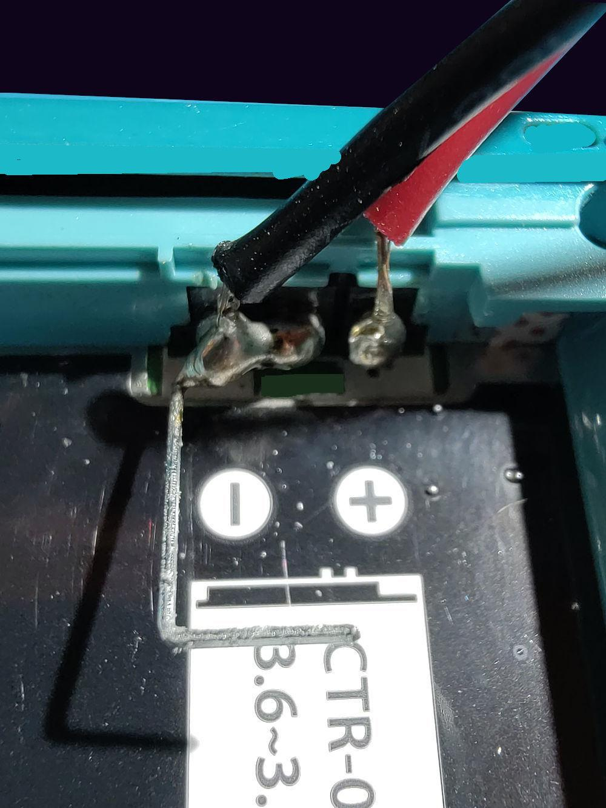
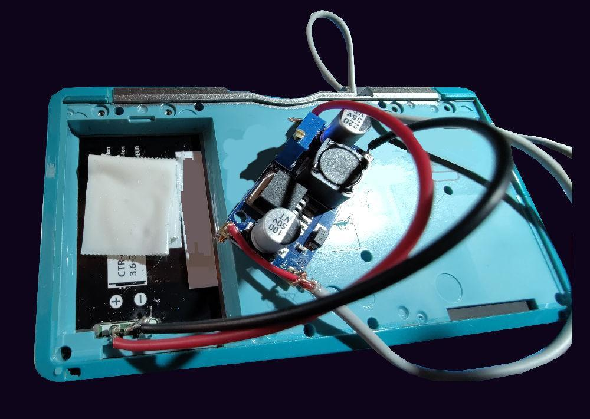
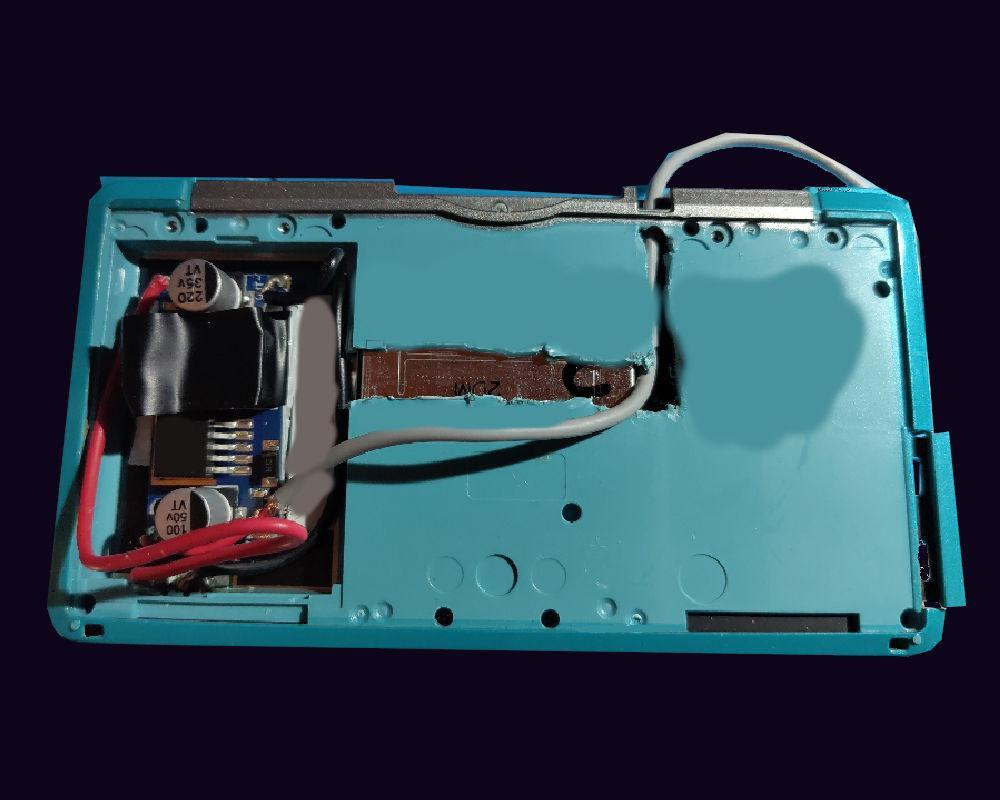
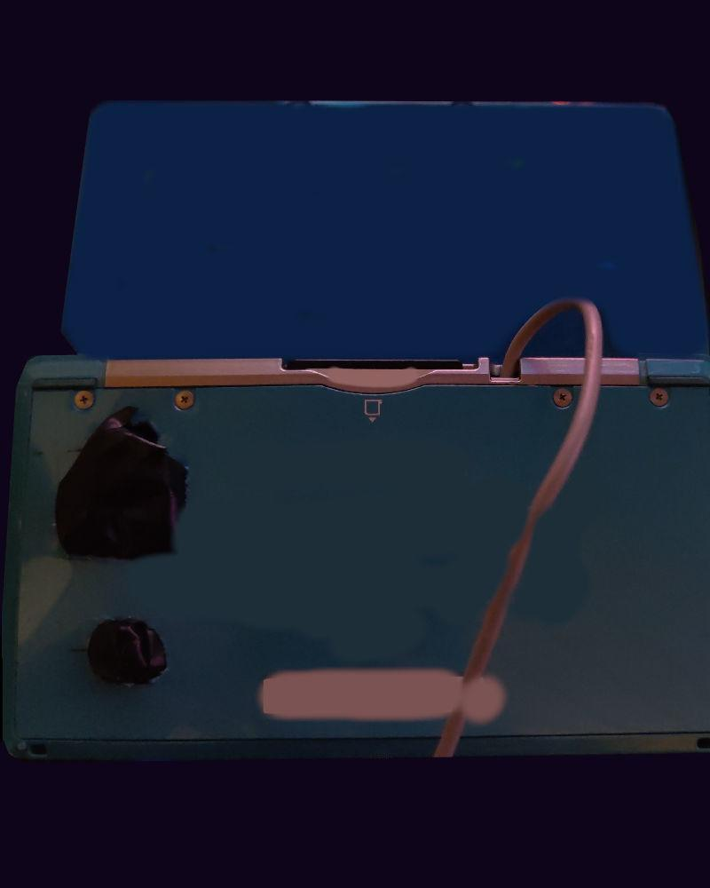
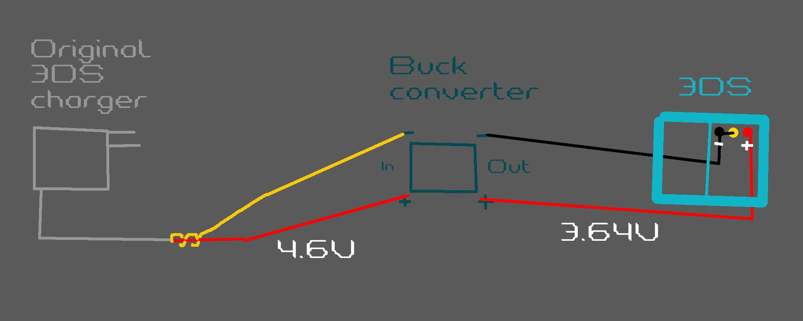
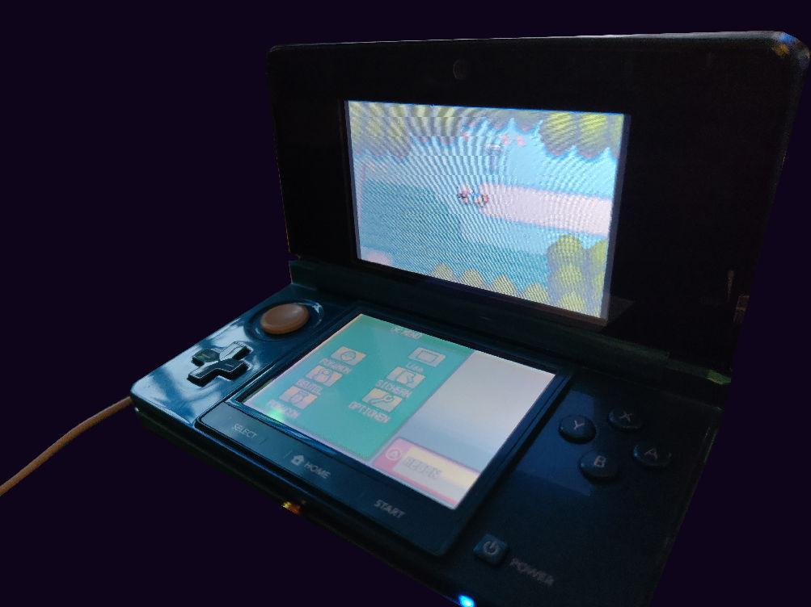

My husband and I needed decorations for our new surround sound setup. We added a shelf to our living room and that now needs decorations and, as young adults nowadays are, we don't own and/or want generic seasonal bulls*it decorations. So we got random gaming crap from our childhood's from the basement and put it in there. While doing this I discovered literally all battery's of any handheld console was bloated.
After removing them all I thought to myself, playing Pokémon Soul Silver with the Pokéwalker would be nice again. This is also the ONLY reason for me not to just use my backup and play on anything else.
But without a battery this is gonna be not possible. The 3DS CAN run without a battery BUT needs it to power on, then you can just remove it while plugged in. I can see why they block the use without it but at the same time it sucks for preservation or later in the hardware's lifetime... but that was never the goal of the manufacturer (if anything they are the inverse of preservation).
After searching a lot I saw no one did a hard power wire mod before. Some adapters for generic battery's exist but not a direct power mod.
I found one website that said it has the information about the charger but it was locked to admins (WTF). So I removed the cable isolation and found the exposed wire around the red middle wire is negative and the wire inside the red isolation is positive. Measuring the voltage, it outputs 4.63V exactly.
And after seeing that good battery's get up to 30 euros per battery with everything incl. and official once are out of the question, because I like to be able to do class action lawsuits and despise forced arbitration I decided to hard-mod the power-cable into the 3DS (Last time I wrote I will enforce my principles no mater what I meant it. Even if that means permanently removing the portability of a device.). I just striped the wires of an official charger, connected a buck converter to it to get from 4.6 to 3.6/7 volts and then soldered the output directly to the 3DS battery contacts. To convince the 3DS that a battery is inserted the middle pin must be bridged to the minus pin. I used a small metal wire for that (I know my soldering is absolutely terrible).
For strain relieve I just used wire routing, taped it down and then after making sure the cables don't get pinched by the back-cover pressed it down with the back-cover (I know, this is jank AF).
It works great. I obviously configured the buck converter before connecting it to the 3DS. I had 3.64V and the 3DS thinks it is around 75% full. Should you do this? No! This can be a fire hazard, I can never leave the DS alone plugged-in and I always must make sure I unplug it and the try turning it on to discharge the capacitors in the charger. You also must ensure to NEVER and I mean N E V E R connect a charger to any of the two charging ports of the 3DS. This will 100% kill it. I only did this because of the Pokéwalker, the overpriced high quality battery's and official once being out of the question. I will most likely never use the 3DS again after playing Soul Silver.
Connecting to the battery contacts:

How it is setup:

Literally carving out the plastic for a cable channel (A removal of the backside of the housing is a must because the 3DS is dense and has a lot of stuff directly under the plastics. Cutting while it is on the 3DS is NOT an option. Be careful with the ribbon connectors on the other side):

The finished project. And yes the compositors and the settings wheel box of the buck converter is sticking out. I covered it with tape to make sure to never touch it or accidentally change the voltage (A slight change can be high enough to kill the 3DS):

And a drawing of how it works (I know, the nearly 3 years of drawing technical infrastructure of buildings in school really payed of):

I also saw that a lot in regards to modding has changed. You can even play in widescreen (Looks like ass) or use Hardware filters (TWPatch with Linear1 looks great).

From my writing here and in the past, I'm very sure you all can see I don't think highly of the manufacturer. And just to make sure I cover my tracks, because what are rights anyway: Everything here is my opinion and theoretical and dose not must be true.